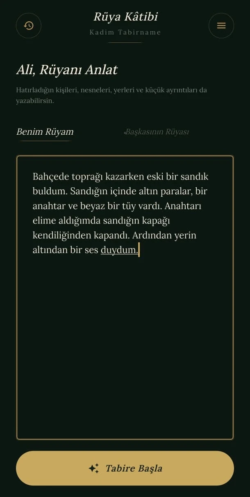
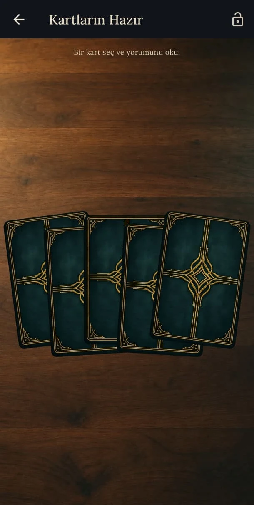
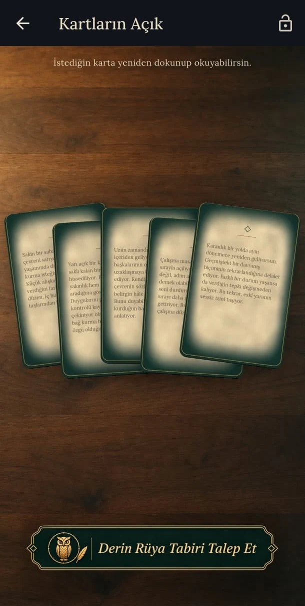

Kişileri, nesneleri, yerleri ve duyguları kendi kelimelerinle yaz.
Rüya Kâtibi
Rüyanızdaki ayrıntıları anlatın, size özel açılan kartların arasından seçim yapın ve başka bir yerde karşılaşmayacağınız kişisel bir tabir deneyimine adım atın.
GOOGLE PLAYÇok yakındaAPP STOREÇok yakında



Uygulama hakkında
Her rüya, kendi kartlarını açar.
Rüyanızın sembollerini doğrudan ele vermeden, kart seçimi ve kişiselleştirme adımlarıyla merakı koruyan özgün bir yorumlama deneyimi.
Rüyanın ayrıntılarına göre açılan gizemli kartlar arasından seçim yap.
Seçimlerin ve anlattığın rüya birlikte değerlendirilerek sana özel bir yorum oluşturulsun.
Rüyalarını ve yorumlarını zaman içinde saklayıp yeniden keşfet.
Rüyalarının açacağı kartları keşfet.
Çok yakında Google Play ve App Store’da.